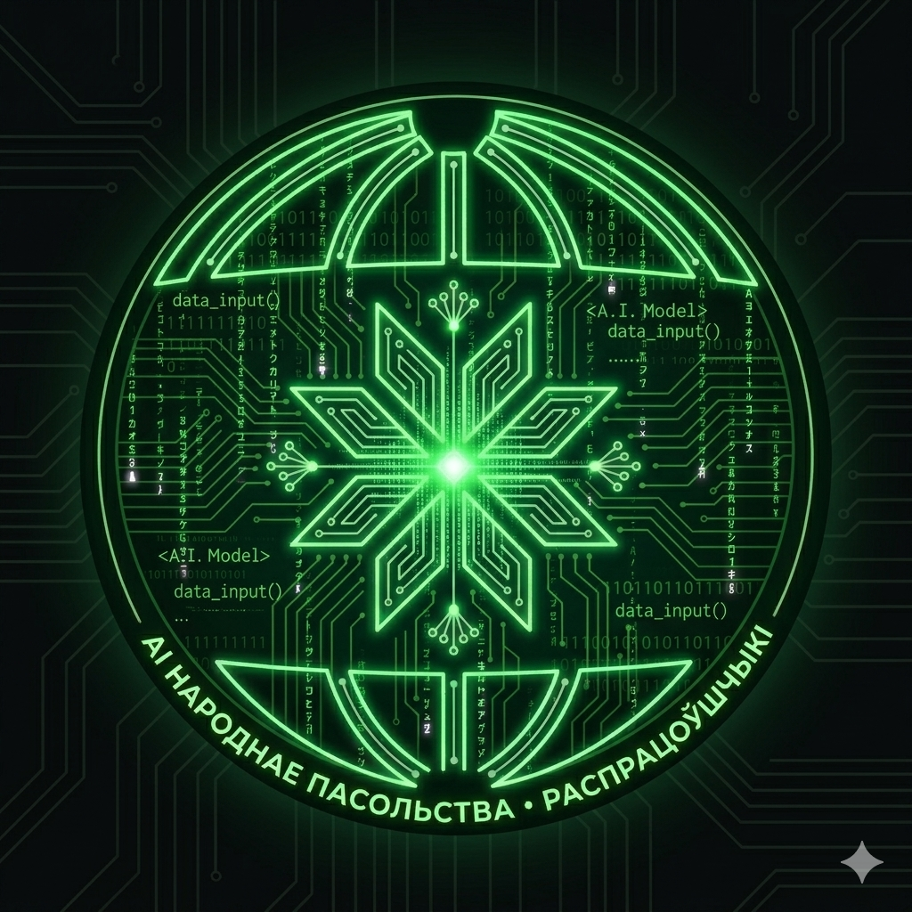

[AI]mbassy
Foreign law, in the language of the people who need it.
An agentic RAG assistant for Belarusian refugees & migrants.
Generative AI Systems Design & Implementation — Final Project
Built with Народныя Пасольствы (People's Embassies) · Alexander Fruman
01 · Why this exists
A country people are forced to leave
- Since the 2020 crackdown, political repression in Belarus has criminalized dissent — arrests, prosecutions, exile.
- Since 2020, around 1 million Belarusians have been forced to leave their homeland — out of a population of just 8 million.
- Most settled in countries near Belarus — Poland, Lithuania, Czechia, Ukraine, Austria, Latvia, and others.
- They land in a foreign legal system, in a language they don't read, needing status fast: asylum, residence, work, citizenship.
For them, a wrong answer isn't an inconvenience — it can mean deportation.
[AI]mbassy
The situation in Belarus
02 · The problem
When the embassy is the people
Народныя Пасольствы · People's Embassies
- A civil-society network representing Belarusians abroad when official representation can't.
- Volunteers help the diaspora with real, practical legal questions.
- The domain expert behind this project labels our test set & gold answers.
The pain
- Correct answers are buried in German-only Austrian statutes (AsylG, FPG, NAG, AuslBG, StbG, NAG-DV).
- Questions arrive in Russian / Belarusian — a cross-lingual gap.
- A handful of volunteer coordinators, overloaded; the same questions, repeated.
- Outdated or wrong answers carry real legal consequences.
People who need Austrian legal answers can't read Austrian law — and the few who can are overwhelmed.
[AI]mbassy
People's Embassies & the problem
03 · The solution
A bot that cites the law — in your language
- A Telegram assistant: asks in RU/BY → answers grounded in Austrian law, citing the exact §.
- When it can't answer safely → honest hand-off to a human coordinator.
Key functionalities
- Cross-lingual RAG with paragraph (§) citations
- Privacy guardrail — the original message is never stored
- Confidence router — answer vs. honest hand-off
- Built-in analytics & per-step tracing
How this meets the assignment
| Problem 5% | Belarusian diaspora legal-aid gap (lived, specific) |
| Research 15% | People's Embassies + domain expert; corpus & alternatives discovery |
| Architecture 20% | LangGraph agentic pipeline (next slides) |
| Implementation 50% | RAG + evaluation + guardrail + router + Telegram + BigQuery |
| Pitch 10% | This talk |
[AI]mbassy
Solution & requirements
04 · Architecture
End-to-end pipeline
[AI]mbassy
Pipeline
05 · Architecture
Inside the RAG
[AI]mbassy
RAG internals
06 · Safety
Guardrail — the privacy gate, run first
Raw messageRU / BY · never stored
→
DLP de-identifyPII → [INFO_TYPE]
→
Flash-Lite checktopic + injection
→
allow→ pipeline
polite refusaloff-topic / injection
1 · PII scrub
Google DLP · deidentifyPERSONEMAILPHONEADDRESSPASSPORTIBANDOBSVNR*
- Verified live on RU/BY — catches «Настя», «Саша», BY passports
- Regex backstop* for Austrian SVNR & case numbers (Zl./GZ)
- City / country kept on purpose — aids legal retrieval, isn't PII
2 · Topic gate
Gemini 2.5 Flash-Lite- Is it an Austrian migration / asylum / citizenship / work question?
- Off-topic → polite refusal before any Pro call (cost guard)
- Sees only the scrubbed text — no PII reaches even the cheap model
3 · Injection filter
same Flash-Lite call- Flags «ignore your rules» / system-prompt manipulation
- Precedence: injection > off-topic > allow
- Fails closed on topic; never false-flags injection on a parse error
Privacy by design: the original message is never stored — only the DLP-scrubbed text is searched, sent to the model, and logged.
[AI]mbassy
Guardrail
07 · Results
Metrics & what moved them
Measured on 13 control questions from our domain expert at Народныя Пасольствы — gold answer + exact § (11 answerable · 2 must-refuse).
Answer quality = an independent 3-model judge panel, fixed 1-5 rubric:
GeminiGPTClaude
— cross-checked, never self-graded.
0.57
from 0.14
Retrieval Hit@5 · ~4× (up to 5×)
0.56
from 0.21
Mean Reciprocal Rank
4.4/5
from 2.9
In-corpus accuracy (panel)
12.5s
from 23.8s
Generate latency · −47%
| Lever | What it moved | Why (from our iterations) |
|---|---|---|
| Query rewrite RU→German | Hit@5 0.14 → 0.57 (~4×) | The RU question never matched German statutes — rewriting it to formal German was the retrieval unlock. |
| Chunk enrichment — 3 RU questions / § | in-corpus accuracy 3.7 → 4.4 | Each § is embedded together with lay-Russian questions → a cross-lingual bridge built into the index. |
| RRF(RU+DE) + Flash reranker | in-corpus quality held ≈ 4.0 | Deeper candidate pool, reranked to top-k; RRF surfaces the Russian cases a German-only query misses. |
| Flash generator (vs Pro) | quality 4.00 → 3.97 · latency −47% | Equal answer quality at half the latency and cost → Flash became the serving default. |
| Confidence router | routed in-corpus 3.6 → 4.0 | A low-confidence or dead-end answer becomes an honest hand-off, not a confident wrong one. |
[AI]mbassy
Metrics
08 · Results
Honest results: regressions
Better retrieval sometimes made the bot worse — we kept those findings instead of hiding them. This is the core of our evaluation-driven build.
Better retrieval, worse refusals
refuse behavior −0.61Rewriting to German lifted in-corpus accuracy +0.48 — but the richer context made the bot overconfident. It began answering false-premise questions it should decline (q11 «residence longer than the passport»: 2.67 → 1.67).
The average hid the result
ALL flat 3.36 → 3.33One averaged score looked unchanged. Only splitting in-corpus vs must-refuse exposed the +0.48 / −0.61 split. Then our domain expert re-labelled the strata — which flipped the conclusion.
Fixing it was whack-a-mole
stopped at the noise floorThe confidence router closed the refusal gap, then over-handed-off honest redirects (q09/q11). A scoped rubric fix recovered them; we stopped where n=13 turns noisy (q01 flips even at temperature 0). A judge crash even faked a refusal — now logged as an error, not a hand-off.
The value isn’t a pretty number — it’s that we measured, surfaced every regression, and stopped where the data stops being trustworthy.
[AI]mbassy
Regressions
09 · Honesty
Weaknesses & how we'll fix them
Where it is still weak — and the concrete next fix for each, not a wish-list.
| Weakness | How we'll fix it |
|---|---|
| q08 still leaksA must-refuse question is answered confidently (router decision = answer, confidence 5 → false answer ~2.0/5). | Tighten the false-premise rule in the router; add the missing topic to the corpus so it becomes a grounded answer or a clean refuse; grow the must-refuse eval set. |
| Retrieval edge casesq03 / q06: the gold § competes with a near-duplicate chunk; borderline questions stay unstable. | Cleaner chunk boundaries + more enrichment questions; a relevance threshold on retrieved chunks; more gold labels per topic. |
| Latency ~12.5sStill far from the <2s KPI — the answer is six sequential model calls. | Stream the answer (first tokens fast), parallelize independent calls, cache query embeddings, skip the reranker on a small pool. |
| Small eval setn = 13, a single expert — a real noise floor (q01 flips), so no firm % guarantee yet. | Expand the held-out gold set with Народныя Пасольствы; add real-user A/B; stratify per topic. |
[AI]mbassy
Weaknesses
10 · Roadmap
Where this goes next
01
15 People's Embassies
Today: Austria. Next: 15 embassies / countries, each with its own statutes — same pipeline, new corpus.
→ the diaspora across the EU
02
Automated data pipeline
One conveyor: ingest → clean → chunk → enrich → embed → index. Re-runs when laws change; today it is semi-manual scripts.
→ a new country live in hours
03
NLP question dashboard
Cluster what people actually ask — topics, gaps, trends — built on the privacy-safe BigQuery traces (no PII).
→ shows where to add corpus & staff
04
Feedback loop
Thumbs up/down + coordinator corrections become new gold labels. Real usage → better answers.
→ improves with every use
From one country to a network — open POC, open code, built with the people it serves.
Telegram: @AImbassy_bot
GitHub: github.com/YurkaGagarin/aimbassy-public
Built with Народныя Пасольствы
[AI]mbassy
Roadmap & scale
11 · Demo
Live demo — in reserve


[AI]mbassy
Live demo